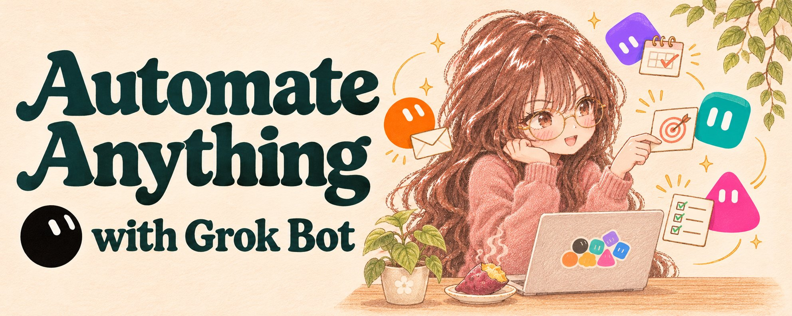

Tự động hóa mọi thứ với Grok Bot
Bản gốc của lauren (@poteto) là một X Article, đăng kèm bài này trên X. Bản dịch phục vụ học tập phi thương mại; mọi quyền đối với bài gốc và hình minh họa thuộc về tác giả. Ghi công không đồng nghĩa với giấy phép tái sử dụng. Hình minh họa được tải về lưu cùng bài, không hotlink.

TL;DR
- Tự động hóa là một cách tư duy ai cũng học được, gồm hai phần: mục tiêu (thứ bạn muốn có ở cuối) và quy trình (cách đi tới đó).
- Luôn bắt đầu từ mục tiêu, đừng nhầm một bước như “gửi email” hay “điền form” là mục tiêu. Quy trình chỉ là phương tiện, bot có thể đề xuất cách tốt hơn.
- Mô tả quy trình bằng giọng nói, bắt bot diễn đạt lại để bạn xác nhận trước khi chạy; dạy cả những quyết định “ngầm” bằng ví dụ thật.
- Cho bot công cụ để tự lấy phản hồi (email, đánh giá, dữ liệu có ID nhất quán) để nó tự cải thiện; dùng routine để bot tự chạy theo trigger hoặc lịch.
- Tác giả gợi ý cài Dr Eggbot, một bot chuyên thiết kế bot, để bắt đầu.
Ba chế độ đọc: dùng 3 nút tròn ở góc dưới bên phải để chuyển nhanh (trên điện thoại, ba nút nằm thành một thanh ở cuối màn hình để không đè chữ bên phải). VI — bản dịch tiếng Việt đầy đủ, theo từng đoạn. EN — nguyên văn tiếng Anh, không tách cụm. Cụm (mặc định, biểu tượng A gạch dưới) — tiếng Anh tách thành các cụm theo mệnh đề; rê chuột hoặc chạm vào một cụm để xem nghĩa tiếng Việt. Chạm lần nữa hoặc chạm ra ngoài để đóng; với cụm chứa liên kết, trên điện thoại chạm lần đầu để xem nghĩa, chạm lần hai để mở liên kết. Chế độ được ghi nhớ trên máy này; có thể mở thẳng bằng ?mode=vi, ?mode=en hoặc ?mode=chunk. Ở chế độ Cụm, ô “Gạch chân nhẹ các cụm” vẫn dùng được.
Tự động hóa khó làm cho đúng hơn ta tưởng, kể cả với những người làm việc này hằng ngày. Tôi muốn chia sẻ cách tôi tiếp cận nó, cả trong công việc lẫn đời sống cá nhân, và cách Grok Bot có thể giúp bạn theo đuổi những mục tiêu tham vọng hơn.
Automation can be surprisingly hard to get right, even for people who do it every day. I’d like to share how I approach it, at work and in my personal life, and how Grok Bot can help you take on more ambitious goals.
Automation can be surprisingly hard to get right, even for people who do it every day. I’d like to share how I approach it, at work and in my personal life, and how Grok Bot can help you take on more ambitious goals.
Một cách tư duy
A way of thinking
A way of thinking
Tự động hóa thực chất chỉ là một cách tư duy mà ai cũng học được. Đó là suy nghĩ có hệ thống và có logic, chia nhỏ mọi việc thành từng bước trong khi vẫn luôn giữ mục tiêu trong đầu.
Automation is really just a way of thinking that anyone can learn. It's about thinking systematically and logically, breaking things down into small steps while keeping a goal in mind.
Automation is really just a way of thinking that anyone can learn. It's about thinking systematically and logically, breaking things down into small steps while keeping a goal in mind.
Nó gồm 2 phần: một mục tiêu và một quy trình.
There are 2 parts to it: a goal, and a process.
There are 2 parts to it: a goal, and a process.
Một ví dụ đời thường là nướng bánh táo (mục tiêu). Bạn làm theo công thức, tức một quy trình có các bước rõ ràng: mua và sơ chế đúng nguyên liệu, lắp ráp và trang trí bánh, nướng, để nguội, v.v. Hay khi thay lốp xe bị xẹp (cũng là một mục tiêu), bạn cần tìm cách kích xe lên để với tới bánh xe, tìm dụng cụ để tháo lốp cũ, lắp lốp mới, rồi ráp mọi thứ lại như cũ.
An everyday example of this is baking an apple pie (the goal). You follow a recipe or process which has clearly laid out steps - buying and preparing the right ingredients, assembling the pie and decorating it, baking it, letting it cool, and so on. Or if you're replacing a flat tire (also a goal), you might need to find a way to jack the car up so you can reach the tire, find the tools to remove and replace it with a new one, and then put everything back together again.
An everyday example of this is baking an apple pie (the goal). You follow a recipe or process which has clearly laid out steps - buying and preparing the right ingredients, assembling the pie and decorating it, baking it, letting it cool, and so on. Or if you're replacing a flat tire (also a goal), you might need to find a way to jack the car up so you can reach the tire, find the tools to remove and replace it with a new one, and then put everything back together again.
Nói đơn giản, mục tiêu là thứ bạn muốn có ở cuối, còn quy trình là cách bạn đi tới đó.
Simply put, the goal is what you want at the end, and the process is how you get there.
Simply put, the goal is what you want at the end, and the process is how you get there.
Tự động hóa cũng vậy: một mục tiêu và một quy trình, nhưng có thêm một thứ như máy móc, kiểu máy mà tiệm bánh dùng để nướng thật nhiều bánh táo. Hoặc là code, thứ mà kỹ sư phần mềm từng phải tự tay viết để tự động hóa những việc máy tính làm được. Cốt lõi là chia việc thành các bước hướng tới mục tiêu, rồi tự động hóa quy trình đó để bạn không phải tự làm mỗi lần.
Automation is the same thing: a goal and a process, but with the addition of something like a machine, like the ones a bakery might use to bake lots of apple pies. Or code, what software engineers used to write by hand to automate stuff that could be done by a computer. It's about breaking things down into steps towards a goal, then automating the process so you don't have to personally do it every time.
Automation is the same thing: a goal and a process, but with the addition of something like a machine, like the ones a bakery might use to bake lots of apple pies. Or code, what software engineers used to write by hand to automate stuff that could be done by a computer. It's about breaking things down into steps towards a goal, then automating the process so you don't have to personally do it every time.
Grok Bot là tự động hóa cho tất cả mọi người
Grok Bot is automation for everyone
Grok Bot is automation for everyone
Chỉ một hai năm trước, tự động hóa còn bó hẹp trong nhóm người có kiến thức kỹ thuật để chế tạo, lắp ráp máy móc hoặc viết code. Với Grok Bot, tự động hóa bất cứ việc gì làm được trên máy tính giờ nằm trong tầm tay cả những người không rành kỹ thuật hay không phải kỹ sư phần mềm! Và điều thật sự bất ngờ là máy tính làm được nhiều đến mức nào, kể cả những việc bạn không nghĩ một con bot có thể làm.
Just a year or two ago, automation was limited to those with the technical know-how of how to build or put together machines or write code. With Grok Bot, automating anything that can be done with a computer is now in reach even for people who aren't technical or software engineers! And the really surprising thing is just how much computers can do, even on tasks that you might not think a bot is capable of doing.
Just a year or two ago, automation was limited to those with the technical know-how of how to build or put together machines or write code. With Grok Bot, automating anything that can be done with a computer is now in reach even for people who aren't technical or software engineers! And the really surprising thing is just how much computers can do, even on tasks that you might not think a bot is capable of doing.
Bạn không cần biết viết code để bắt đầu tự động hóa công việc với Grok Bot. Bạn có thể mô tả điều mình muốn bằng ngôn ngữ bình thường, rồi cùng bot tìm ra các bước. Bot có thể viết code cho bạn, và dùng máy tính riêng của nó để làm gần như mọi thứ bạn làm được trên máy tính hay điện thoại của mình.
You don’t need to know how to write code to start automating tasks with Grok Bot. You can describe what you want in plain English, then work with your bot to figure out the steps. Bots can write code for you, and use its own computer to do pretty much anything that you can do on your own computer or smartphone.
You don’t need to know how to write code to start automating tasks with Grok Bot. You can describe what you want in plain English, then work with your bot to figure out the steps. Bots can write code for you, and use its own computer to do pretty much anything that you can do on your own computer or smartphone.
Nếu bạn không rành kỹ thuật, hãy tạm gác sự hoài nghi lại một chút. Bot thật sự làm được mọi thứ bạn làm trên máy tính. Nó có thể tự di chuột và bấm vào các thứ, cài đặt hoặc kết nối với những ứng dụng, phần mềm bạn dùng hằng ngày, lướt web bằng trình duyệt riêng, tham gia cuộc họp và ghi chú giúp bạn, và còn nhiều hơn thế.
If you're not technical, I want you to suspend your disbelief for a moment. Bots really can do anything that you can do on a computer. It can move its own mouse around and click on things, install or connect to apps and software that you use everyday, browse the internet on its own browser, join meetings and take notes for you, and so much more.
If you're not technical, I want you to suspend your disbelief for a moment. Bots really can do anything that you can do on a computer. It can move its own mouse around and click on things, install or connect to apps and software that you use everyday, browse the internet on its own browser, join meetings and take notes for you, and so much more.
Và vì ngày nay rất nhiều phần công việc lẫn cuộc sống của chúng ta dựa vào công nghệ, ngày càng nhiều việc có thể giao cho bot, giúp bạn rảnh tay tập trung vào những chuyện khác.
And because so much of our work and life these days relies on technology, it means that more and more work can be done by a bot instead, freeing you up to focus on other things.
And because so much of our work and life these days relies on technology, it means that more and more work can be done by a bot instead, freeing you up to focus on other things.
Bắt đầu từ mục tiêu
Start with the goal
Start with the goal
Để cụ thể hơn, hãy cùng tạo một bot mới để tự động hóa một việc cho bạn. Vào Grok Bot, tạo bot mới và đặt tên tùy ý. Nếu nghĩ mãi không ra tên, cứ gọi nó là Potato rồi lát nữa nhờ nó tự đặt tên.
To make this concrete, let's build a new bot together that will automate something for you. Go to Grok Bot, then make a new bot and give it any name you like. If you're struggling to find a name, just call it Potato and ask it to name itself later.
To make this concrete, let's build a new bot together that will automate something for you. Go to Grok Bot, then make a new bot and give it any name you like. If you're struggling to find a name, just call it Potato and ask it to name itself later.
Trước khi bắt đầu trò chuyện với bot: mỗi khi nghĩ về tự động hóa, tôi luôn bắt đầu bằng mục tiêu. Rốt cuộc chúng ta đang muốn làm gì?
Before we start chatting with the bot: when I think about automation, I always start with thinking about the goal. What are we trying to do here?
Before we start chatting with the bot: when I think about automation, I always start with thinking about the goal. What are we trying to do here?
Một lỗi tôi hay gặp là người ta nhầm quy trình với mục tiêu. Ví dụ, ở chỗ làm có thể bạn đã có sẵn một quy trình rõ ràng cho các việc mình làm. Nhưng mục tiêu không phải là điền một biểu mẫu hay gửi một email. Đó chỉ là một bước trong quy trình.
One mistake I often see is that people confuse the process for the goal. For example, you may already have a well-defined process at work for the tasks that you do. But the goal is not to fill up a form, or to send an email. That's just a step in the process.
One mistake I often see is that people confuse the process for the goal. For example, you may already have a well-defined process at work for the tasks that you do. But the goal is not to fill up a form, or to send an email. That's just a step in the process.
Thay vào đó, hãy nghĩ về mục tiêu cuối cùng: quy trình này để làm gì, và nó nằm ở đâu trong hoạt động kinh doanh? Nó giúp tăng doanh thu (ví dụ xử lý một đơn bán, xây tính năng mới), hay giảm chi phí (ví dụ đặt hàng tồn kho vừa đủ)? Nếu chưa chắc, hãy hỏi quản lý hoặc đồng nghiệp, hoặc nhờ luôn bot giúp bạn tìm ra!
Instead, think about the goal at the end: what is this process for, and where does it fit into the business? Does it help increase revenue (eg processing a sale, building new features), or does it reduce costs (eg ordering just the right amount of inventory)? If you're not sure, chat with your manager or colleagues, or even ask Bot to help you figure it out!
Instead, think about the goal at the end: what is this process for, and where does it fit into the business? Does it help increase revenue (eg processing a sale, building new features), or does it reduce costs (eg ordering just the right amount of inventory)? If you're not sure, chat with your manager or colleagues, or even ask Bot to help you figure it out!
Làm rõ mục tiêu là điểm khởi đầu tốt nhất vì nó giúp cả bạn lẫn Grok Bot tập trung vào kết quả cuối. Có khi bạn sẽ thấy bot còn tìm ra cách làm quy trình hiệu quả hơn, nên đừng quá gắn bó với một quy trình cụ thể, vì suy cho cùng nó chỉ là phương tiện để đạt mục đích.
Clarifying what the goal is the best place to start because it focuses you and Grok Bot on the end result. You may actually find that bots can figure out how to make the process more efficient too, so it's important not to be too attached to a specific process, since it's a means to an end after all.
Clarifying what the goal is the best place to start because it focuses you and Grok Bot on the end result. You may actually find that bots can figure out how to make the process more efficient too, so it's important not to be too attached to a specific process, since it's a means to an end after all.
Khi đã xác định được mục tiêu, hãy bắt đầu bằng việc mô tả nó cho bot mới, rồi nhờ nó tự chọn tên nếu bạn không muốn gọi nó là Potato.
Once you're figured out the goal, start by describing it to the new bot, then ask it to pick a name for itself if you'd rather not call it Potato.
Once you're figured out the goal, start by describing it to the new bot, then ask it to pick a name for itself if you'd rather not call it Potato.
“Chào Potato, đây là mục tiêu tôi muốn bạn chịu trách nhiệm: <mục tiêu>. Hãy dựa vào đó tự chọn cho mình một cái tên và ảnh đại diện.”
“Hi Potato, this is the goal I want you to be responsible for: <goal>. Pick out a name and picture for yourself based on it.”
“Hi Potato, this is the goal I want you to be responsible for: <goal>. Pick out a name and picture for yourself based on it.”
Vài ý tưởng mục tiêu để bạn bắt đầu giao cho bot:
Here are some starter goal ideas you can tell your bot:
Here are some starter goal ideas you can tell your bot:
- Tiết kiệm tiền để mua xe mới, mua nhà, lập quỹ đại học cho conSave money towards buying a new car, house, college fund for my kidsSave money towards buying a new car, house, college fund for my kids
- Xếp lịch đặt chỗ cho khách hàng mới của cơ sở kinh doanh nhỏ của tôiSchedule new customer bookings for my small businessSchedule new customer bookings for my small business
- Cải thiện trải nghiệm khách hàng ở cơ sở kinh doanh nhỏ của tôi để họ để lại đánh giá tốtImprove my customer experience for my small business so they leave me good reviewsImprove my customer experience for my small business so they leave me good reviews
- Tuyển nhân viên mới cho cơ sở kinh doanh nhỏ của tôiHire new employee for my small businessHire new employee for my small business
- Thu thập phản hồi về sản phẩm để tôi cải tiến nóGather feedback for my product so I can make improvements to itGather feedback for my product so I can make improvements to it
- Chuẩn bị slide cho buổi họp hằng tuầnPrepare slides for a weekly meetingPrepare slides for a weekly meeting
- Xây tính năng mới cho sản phẩm của tôiBuild new features for my productBuild new features for my product
Nếu chưa biết mô tả mục tiêu thế nào, hãy nhờ Potato giúp! Hãy nói với nó:
If you're not quite sure how to describe your goal, ask Potato to help you! Tell it:
If you're not quite sure how to describe your goal, ask Potato to help you! Tell it:
“Chào Potato, tôi muốn bạn chịu trách nhiệm một mục tiêu, nhưng tôi chưa biết mô tả nó sao cho tốt. Bạn có thể đặt câu hỏi, phỏng vấn tôi cho tới khi ra được một mục tiêu tôi thấy ưng không?”
“Hi Potato, I'd like you to be responsible for a goal, but I'm not sure how to best describe it. Can you ask me some questions and interview me until we have a goal that I'm happy with?”
“Hi Potato, I'd like you to be responsible for a goal, but I'm not sure how to best describe it. Can you ask me some questions and interview me until we have a goal that I'm happy with?”
Quy trình
The process
The process
Khi đã nói cho bot mục tiêu, hãy nghĩ xem nếu tự làm thì bạn sẽ đạt mục tiêu đó thế nào, rồi nhờ bot xem chỗ nào có thể làm hiệu quả hơn. Nếu bạn muốn nó làm đúng y quy trình của mình, cứ nói với nó như vậy.
Once you've told it your goal, think about how you would achieve this goal if you were doing it, then ask the bot to see where it can make things more efficient. If you'd rather it do a task exactly following your process, you can tell it that too.
Once you've told it your goal, think about how you would achieve this goal if you were doing it, then ask the bot to see where it can make things more efficient. If you'd rather it do a task exactly following your process, you can tell it that too.
Cách tốt nhất để đưa thông tin này cho bot là dùng tính năng đọc bằng giọng nói (voice dictation) trong Grok Bot và nói một hồi, “xả” hết mọi thứ nó cần biết để làm việc, đừng lo nói lan man hay phải sắp xếp ý trước. Hãy kể cho nó:
The best way to give bot this information is to use voice dictation in Grok Bot and speak for a while, brain dump everything it needs to know to do the job, and don't worry about the stream of consciousness or organizing your thoughts first. Tell it:
The best way to give bot this information is to use voice dictation in Grok Bot and speak for a while, brain dump everything it needs to know to do the job, and don't worry about the stream of consciousness or organizing your thoughts first. Tell it:
- Các bước bạn thường làmThe steps you usually takeThe steps you usually take
- Những điều bạn để ý và cần cẩn thậnThe things you watch out for and pay attention toThe things you watch out for and pay attention to
- Các ứng dụng và công cụ bạn dùngThe apps and tools you use to do itThe apps and tools you use to do it
- Cách bạn kiểm tra xem việc đã được làm đúng chưaHow you check that the work was done rightHow you check that the work was done right
- Bạn lấy thông tin cần thiết ở đâu (ví dụ email, Slack/Teams, một ticket, một ứng dụng hay trang web)Where you get the information you need to do it (eg email, Slack/Teams, a ticket, an app or website)Where you get the information you need to do it (eg email, Slack/Teams, a ticket, an app or website)
- Bạn nhận phản hồi về kết quả ở đâu (ví dụ phản hồi/đánh giá của khách, góp ý của đồng nghiệp)Where you get feedback on how it went (eg customer feedback/review, feedback from colleagues)Where you get feedback on how it went (eg customer feedback/review, feedback from colleagues)
“Potato, đây là cách tôi thường tự làm để đạt mục tiêu này: <quy trình>
Tôi muốn bạn nghĩ xem làm sao để tiếp quản hoàn toàn việc này từ tôi. Trước khi bắt đầu, hãy diễn đạt lại bằng lời đơn giản mục tiêu và quy trình của tôi theo cách bạn hiểu, để tôi góp ý và xác nhận. Tôi chưa muốn bạn bắt tay thực hiện, trước hết hãy tập trung lên kế hoạch cho quy trình.”“Potato, this is how I usually do this goal myself: <process>
I want you to think about how you can take this over completely from me. Before you begin, restate what you think my goal and process is in simple English so I can give you feedback and confirm it. I don't want you to start executing on this yet, let's focus on getting the process planned first.”“Potato, this is how I usually do this goal myself: <process>
I want you to think about how you can take this over completely from me. Before you begin, restate what you think my goal and process is in simple English so I can give you feedback and confirm it. I don't want you to start executing on this yet, let's focus on getting the process planned first.”

Đừng lo phải làm đúng ngay lần đầu. Đọc lại những gì bot nói rồi chỉnh bằng cách cho nó thêm thông tin. Làm vài lượt như vậy, bạn sẽ có thứ mình thấy ưng. Khi đó bạn có thể bảo bot tiến hành, và bắt đầu kết nối với các ứng dụng, công cụ nó cần để làm đúng việc.
Don't worry about getting it right on the first pass. Review what the bot says and then correct it by giving it more information. Once you've done this a few times, you should have something you're happy with. You can then tell bot to proceed, and to start connecting to the apps and tools it needs to do the job correctly.
Don't worry about getting it right on the first pass. Review what the bot says and then correct it by giving it more information. Once you've done this a few times, you should have something you're happy with. You can then tell bot to proceed, and to start connecting to the apps and tools it needs to do the job correctly.
Nếu muốn tham vọng hơn, bạn còn có thể nhờ nó đối chiếu quy trình với mục tiêu và xem có nghĩ ra cách nào tốt hơn hay hiệu quả hơn không.
If you're feeling ambitious, you can even ask it to review the process against the goal and see if it can think of a better or more efficient way to do it.
If you're feeling ambitious, you can even ask it to review the process against the goal and see if it can think of a better or more efficient way to do it.
“Hãy đối chiếu quy trình của chúng ta với mục tiêu ban đầu của tôi, nếu thấy cách nào làm tốt hơn hoặc hiệu quả hơn thì cho tôi biết.”
“Review our process against my original goal, and if you see a way to make it better or more efficient, let me know.”
“Review our process against my original goal, and if you see a way to make it better or more efficient, let me know.”
Dạy bot cách bạn suy nghĩ
Teach your bot how you think
Teach your bot how you think
Một điều dễ quên khi giải thích quy trình là bạn làm rất nhiều thứ mà không thật sự phải nghĩ. Nếu bạn xếp lịch cho khách, hẳn bạn biết dịch vụ nào tốn nhiều thời gian hơn, ai làm được việc nào, và khi nào nên chừa thêm thời gian giữa các lịch hẹn. Những quyết định này có thể hiển nhiên với bạn, nhưng bot cũng cần bối cảnh đó. Hãy nghĩ xem bạn chú ý đến những gì khi tự làm, và điều gì khiến bạn làm khác đi.
One thing that's easy to forget when explaining a process is how much you do without really thinking about it. If you're booking customers, you probably know which services take longer, who can do each job, and when to leave extra time between appointments. These decisions might feel obvious to you, but your bot needs that context too. Think about what you're paying attention to when you do the task yourself, and what makes you do something differently.
One thing that's easy to forget when explaining a process is how much you do without really thinking about it. If you're booking customers, you probably know which services take longer, who can do each job, and when to leave extra time between appointments. These decisions might feel obvious to you, but your bot needs that context too. Think about what you're paying attention to when you do the task yourself, and what makes you do something differently.
Hãy cho nó biết bạn lấy thông tin đó ở đâu và kiểm tra việc đã làm đúng ra sao. Ví dụ, nếu email và hệ thống đặt lịch ghi giờ hẹn khác nhau thì nó nên tin bên nào? Một lượt đặt lịch cũng chưa xong chỉ vì đã gửi email. Lịch hẹn phải được lưu đúng và khách phải nhận được xác nhận. Nếu bạn còn đang chờ thông tin, hãy để bot theo dõi việc đó để sau này nó làm tiếp được mà không lỡ tạo thêm một lịch trùng.
Tell it where you get that information and how you check that the work is done right. For example, if an email and your booking system show different appointment times, which should it trust? A booking also isn't finished just because an email was sent. The appointment needs to be saved correctly and the customer needs a confirmation. If you're still waiting for details, have the bot keep track of that so it can pick things back up later without accidentally creating another booking.
Tell it where you get that information and how you check that the work is done right. For example, if an email and your booking system show different appointment times, which should it trust? A booking also isn't finished just because an email was sent. The appointment needs to be saved correctly and the customer needs a confirmation. If you're still waiting for details, have the bot keep track of that so it can pick things back up later without accidentally creating another booking.
Đừng lo phải giải thích hết mọi tình huống ngay từ đầu. Hãy bắt đầu với vài ví dụ thật, kể cả những lần có trục trặc hoặc bạn phải xử lý khác thường. Hỏi bot xem nó sẽ xử lý ra sao, rồi góp ý cho nó. Bạn cũng có thể nhờ nó giúp tìm ra những gì bạn quên giải thích!
Don't worry about explaining every possible situation upfront. Start with a few real examples, including ones where something went wrong or you had to do something differently. Ask the bot how it would handle them, then give it feedback. You can also ask it to help you figure out what you've forgotten to explain!
Don't worry about explaining every possible situation upfront. Start with a few real examples, including ones where something went wrong or you had to do something differently. Ask the bot how it would handle them, then give it feedback. You can also ask it to help you figure out what you've forgotten to explain!
“Potato, giúp tôi tìm ra những gì tôi chưa nói với bạn về quy trình này. Hãy hỏi tôi về cách tôi ra quyết định, tôi lấy thông tin ở đâu, tôi kiểm tra kết quả thế nào, và khi nào bạn nên nhờ tôi giúp. Mỗi lần hỏi một câu, sau đó dẫn tôi đi qua vài ví dụ để tôi góp ý trước khi chúng ta tự động hóa việc này.”
“Potato, help me figure out what I haven't told you about this process yet. Ask me questions about how I make decisions, where I get my information, how I check the work, and when you should ask me for help. Ask one question at a time, then walk me through a few examples so I can give you feedback before we automate this.”
“Potato, help me figure out what I haven't told you about this process yet. Ask me questions about how I make decisions, where I get my information, how I check the work, and when you should ask me for help. Ask one question at a time, then walk me through a few examples so I can give you feedback before we automate this.”
Để bot tự cải thiện
Let your bots improve themselves
Let your bots improve themselves
Khi bot đã chạy được quy trình, điều quan trọng là cho nó phản hồi để nó tiến bộ. Cách tốt nhất là trang bị cho bot các ứng dụng và công cụ cần thiết để nó tự lấy được phản hồi đó. Cách tôi tiếp cận là nghĩ xem nếu chính mình làm việc này và muốn tự tiến bộ thì tôi sẽ làm gì.
Once your bot is performing the workflow, it's important to give it feedback so it can improve. The best way to do it is to equip your bot with the apps and tools it needs to get that feedback for itself. The way I approach this is to think about what I would do if it was me doing the task and I wanted to self improve.
Once your bot is performing the workflow, it's important to give it feedback so it can improve. The best way to do it is to equip your bot with the apps and tools it needs to get that feedback for itself. The way I approach this is to think about what I would do if it was me doing the task and I wanted to self improve.
Ví dụ, nếu bot đang quản lý lịch đặt của khách mới cho bạn, một cách để nó tự cải thiện là cho nó theo dõi email, mạng xã hội hoặc đánh giá trên Google/Yelp để tìm phản hồi của khách. Nó có thể để ý những phản hồi đó rồi chủ động đề xuất cải tiến quy trình.
For example, if your bot is managing new customer bookings for you, a way to let it improve itself is by letting it monitor your emails, social media, or Google/Yelp reviews for customer feedback. It can look out for that feedback and then take the initiative to propose improvements to your process.
For example, if your bot is managing new customer bookings for you, a way to let it improve itself is by letting it monitor your emails, social media, or Google/Yelp reviews for customer feedback. It can look out for that feedback and then take the initiative to propose improvements to your process.
Chẳng hạn một khách viết trên Yelp rằng họ phải chờ rất lâu mới có người tiếp. Nếu bot tự tra được thông tin này trên Yelp, đồng thời tra được dữ liệu bạn lưu về khách đó trong ngày hôm ấy, nó có thể thấy chuyện gì đã trục trặc.
Maybe a customer says on Yelp that they had to wait very long before someone could attend to them. If your bot can look up this information on Yelp for itself, and also look up any records you have for the customer that day, it could see what might have gone wrong.
Maybe a customer says on Yelp that they had to wait very long before someone could attend to them. If your bot can look up this information on Yelp for itself, and also look up any records you have for the customer that day, it could see what might have gone wrong.
Theo nghĩa đó, việc kinh doanh của bạn càng được số hóa thì càng tốt cho bot và tự động hóa. Chính việc có sẵn dữ liệu cho bot khả năng nghĩ ra những cải tiến tốt hơn. Và hay nhất là Grok Bot có thể xây công cụ giúp bạn thu thập dữ liệu này! Ví dụ, nếu bạn mở dịch vụ sửa xe, bạn có thể nhờ bot làm một ứng dụng dùng trên máy tính và điện thoại để ghi lại chi tiết mỗi lượt khách ghé.
In that sense, the more computerized your business is, the better for bots and automation. The availability of that data is what gives your bot the ability to come up with better improvements. And the best part is that Grok Bot can build tools for you to get this data! For example, if you're operating a car repair service, you could ask bot to build you an app that you can use on your computer and phone to log details about a customer visit.
In that sense, the more computerized your business is, the better for bots and automation. The availability of that data is what gives your bot the ability to come up with better improvements. And the best part is that Grok Bot can build tools for you to get this data! For example, if you're operating a car repair service, you could ask bot to build you an app that you can use on your computer and phone to log details about a customer visit.
Nếu bạn ghi lại thời điểm:
If you log the time of:
If you log the time of:
- khách tới cửa hàngwhen they got to your shopwhen they got to your shop
- khách được nói chuyện với nhân viên tiếp nhậnwhen they were able to speak to a service repwhen they were able to speak to a service rep
- bạn nhận chìa khóa xe của kháchwhen you took possession of their keyswhen you took possession of their keys
- bắt đầu và hoàn tất dịch vụwhen service started and finishedwhen service started and finished
thì bạn có thể tính ra khách đã chờ bao lâu và chẩn đoán nguyên nhân tốt hơn. Đây chỉ là một ví dụ đơn giản, nhưng bài học then chốt là: Grok Bot có càng nhiều dữ liệu thì càng giúp được bạn, việc kinh doanh và công việc của bạn tốt hơn.
You could work out how long they spent waiting and better diagnose why. This is just a simple example, but the key lesson here is that the more data you have available to Grok Bot, the better it can help you and your business and work.
You could work out how long they spent waiting and better diagnose why. This is just a simple example, but the key lesson here is that the more data you have available to Grok Bot, the better it can help you and your business and work.
Bot cũng có thể đối chiếu chéo dữ liệu từ nhiều nguồn nếu bạn có thứ gì đó như ID, tức một con số hay chuỗi ký tự duy nhất (chẳng hạn địa chỉ email) gắn danh tính cho dữ liệu. Đó có thể là mã khách hàng hoặc email, số đơn hàng, mã linh kiện, mã vạch, mã nhân viên, v.v. Nếu bạn dùng nhiều ứng dụng và dịch vụ, việc có ID duy nhất và nhất quán trên tất cả các công cụ sẽ giúp gom dữ liệu lại để bot hiểu trọn vẹn chuyện gì đang diễn ra.
Bots can also cross reference data across multiple sources if you have something like an ID - some kind of number or unique text like an email address that gives that data an identity. This could be a customer ID or email address, an order number, a part number, a barcode, an employee ID, and so on. If you use multiple apps and services, having unique and consistent IDs across all these tools will help you bring that data together so bot can fully understand what's going on.
Bots can also cross reference data across multiple sources if you have something like an ID - some kind of number or unique text like an email address that gives that data an identity. This could be a customer ID or email address, an order number, a part number, a barcode, an employee ID, and so on. If you use multiple apps and services, having unique and consistent IDs across all these tools will help you bring that data together so bot can fully understand what's going on.
Cho bot tự động làm việc
Making bots do work automatically
Making bots do work automatically
Điều tiếp theo là: khi nào bot nên làm việc? Nó nên bắt đầu khi có email tới, khi ai đó gửi tin nhắn, hay theo lịch định kỳ? Trong Grok Bot, bạn thiết lập việc này bằng routine.
The next thing is, when should the bot do the work? Should it start when an email arrives, when someone sends a message, or on a regular schedule? In Grok Bot, you set this up with routines.
The next thing is, when should the bot do the work? Should it start when an email arrives, when someone sends a message, or on a regular schedule? In Grok Bot, you set this up with routines.
Không có routine, bot chỉ làm khi bạn yêu cầu. Lúc mới bắt đầu dùng bot thì vậy cũng ổn, nhưng nếu muốn mọi thứ trơn tru hơn, bạn sẽ cần tìm cách để bot tự làm, để bạn không còn là nút thắt cổ chai.
Without a routine, bots will only do the work when you ask them to. This is fine when you're first starting out with using bot, but if you want to streamline things, you'll want to figure out how to get the bot to do it automatically, so you're no longer the bottleneck.
Without a routine, bots will only do the work when you ask them to. This is fine when you're first starting out with using bot, but if you want to streamline things, you'll want to figure out how to get the bot to do it automatically, so you're no longer the bottleneck.
Thường thì công việc bắt đầu nhờ một trigger nào đó như email hay tin nhắn Slack/Teams. Hoặc có thể nó diễn ra theo lịch định kỳ, như mỗi tuần một lần hay cách ngày. Dù là cách nào, chỉ cần bạn nhờ, bot sẽ tự thiết lập!
Usually, the work happens with some kind of trigger like an email or Slack/Teams message. Or maybe it happens on a regular schedule, like once a week or every other day. Either way, if you ask your bot to set it up, it will!
Usually, the work happens with some kind of trigger like an email or Slack/Teams message. Or maybe it happens on a regular schedule, like once a week or every other day. Either way, if you ask your bot to set it up, it will!
Cài Dr Eggbot
Install Dr Eggbot
Install Dr Eggbot
Tôi đã dạy Dr Eggbot mọi điều tôi biết về tự động hóa công việc, nên nếu bạn muốn bắt đầu tự động hóa nhiều hơn, hãy cài nó và nhờ nó giúp! Dr Eggbot là một bot chuyên thiết kế bot, nó sẽ tạo ra những con bot chất lượng cao cho bạn.
I taught everything I know about automating work to Dr Eggbot, so if you want to start automating your work more, install it and ask it to help you! Dr Eggbot is a bot designer - it will create high quality bots for you.
I taught everything I know about automating work to Dr Eggbot, so if you want to start automating your work more, install it and ask it to help you! Dr Eggbot is a bot designer - it will create high quality bots for you.
Cảm ơn bạn đã đọc!
Thanks for reading!
Thanks for reading!
Know-how & Insight
Ghi chú của người dịch
- Viết mục tiêu kèm tiêu chí “xong”. “Xếp lịch cho khách” mơ hồ; “mọi yêu cầu đặt lịch được lưu đúng vào hệ thống và khách nhận xác nhận trong 15 phút” thì bot kiểm tra được. Mục tiêu có thước đo giúp bot tự biết khi nào làm sai.
- Nguồn sự thật (source of truth) phải được nói rõ. Ví dụ email lệch giờ với hệ thống đặt lịch trong bài là lỗi kinh điển của tự động hóa. Hãy chỉ định bên nào thắng khi dữ liệu mâu thuẫn, và khi nào bot phải dừng lại hỏi người.
- Thiết kế cho chạy lại an toàn (idempotent). Lời nhắc “không lỡ tạo thêm một lịch trùng” chính là nguyên tắc này: trước khi tạo, bot nên tra theo ID (email, số đơn) xem đã có chưa. Đây là lý do ID nhất quán giữa các công cụ quan trọng đến vậy.
- Phân quyền theo mức rủi ro. Việc đọc và tổng hợp có thể giao hẳn; việc gửi tin cho khách, thanh toán hay xóa dữ liệu nên có bước duyệt, ít nhất ở giai đoạn đầu. Mở rộng quyền dần khi bot đã chứng minh làm đúng qua nhiều lượt.
- Routine cần có báo cáo và đường lui. Khi bot tự chạy theo lịch hay trigger, hãy yêu cầu nó báo ngắn gọn kết quả, ghi rõ nguồn nào bị bỏ qua, và báo lỗi thay vì im lặng. Một routine không ai đọc báo cáo thì lỗi sẽ âm thầm tích tụ.
- Vòng phản hồi là “động cơ” của tự cải thiện. Đánh giá trên Google/Yelp, email phàn nàn, số liệu thời gian chờ… chỉ hữu ích khi bot được phép đọc chúng và có nơi ghi lại bài học (ví dụ bộ nhớ hoặc skill) để lần sau làm khác đi.
Đây là phân tích bổ sung của người dịch, không phải phần nguyên văn hay khuyến nghị đã được tác giả xác nhận.
Mindmap — Tự động hóa mọi thứ với Grok Bot
mindmap
root((Tự động hóa với Grok Bot))
Cách tư duy
Mục tiêu là kết quả cuối
Quy trình là cách đi tới
Chia nhỏ thành từng bước
Bắt đầu từ mục tiêu
Đừng nhầm bước với mục tiêu
Tăng doanh thu hay giảm chi phí
Nhờ bot phỏng vấn để làm rõ
Quy trình
Đọc bằng giọng nói
Bot diễn đạt lại để xác nhận
Lặp lại cho tới khi ưng
Đối chiếu với mục tiêu
Dạy bot cách bạn nghĩ
Quyết định ngầm
Nguồn thông tin đáng tin
Ví dụ thật kể cả lỗi
Tự cải thiện
Phản hồi từ email và đánh giá
Dữ liệu càng nhiều càng tốt
ID nhất quán để đối chiếu
Tự động chạy
Routine theo trigger
Routine theo lịch
Bạn không còn là nút thắt
Dr Eggbot
Bot thiết kế bot
Nguồn gốc: “Automate Anything with Grok Bot” của lauren (@poteto) trên X. Nội dung và hình minh họa thuộc về tác giả; bản dịch tiếng Việt đăng trên blog này vì mục đích học tập. Cập nhật ba chế độ đọc.